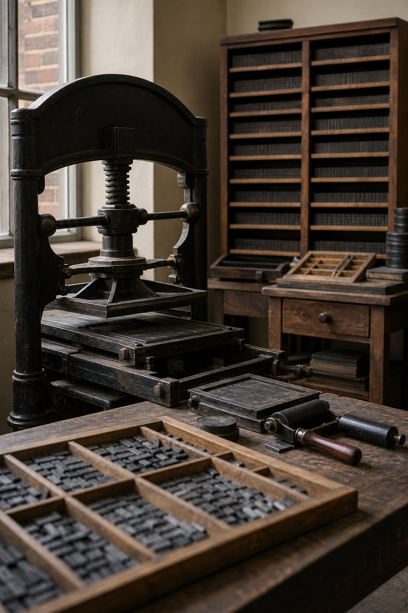

01
Correspondência
Cartas e recomendações entre lojas e países.
Ato I · A pergunta
A maçonaria entre a rede e o poder — 1717 a 1964.
Tese
Bastidor, sim.
Comando, não.
A pergunta de pesquisa
A resposta depende de separar três coisas que a lenda costuma somar.
Rede
Onde elites se encontram, negociam e recrutam.
Presença
Densidade de nomes, não direção política.
Rito
Linguagem comum, não senha de poder.
Quatro números que resumem o problema
8–9
signatários maçons da Declaração de Independência dos EUA, entre 56.
13
dos 39 que aprovaram a Constituição americana de 1787.
250
lojas que financiaram o Monumento a Washington.
0
documentos de um comando central da ordem sobre esses processos.
O quarto número é o mais importante — e o menos citado.
Eixo político e constitucional
Eleição anual, votação por maioria, representação de oficinas e um texto fundante: as Constituições de Anderson, de 1723.
1776
Estados Unidos
A Constituição de 1787 nasce em ambiente de loja e de sociabilidade maçônica.
13 dos 39 convencionais
1820
Portugal
O Sinédrio articula a Revolução Liberal do Porto e impõe as Cortes e a Constituição de 1822.
Maioria maçônica no Sinédrio
1822
Brasil
O Grande Oriente Brasílico é fundado com finalidade política explícita.
D. Pedro I, Grão-Mestre
Limite: presença não é direção — havia maçons nos dois lados de cada conflito.
Eixo social e associativo
Eixo cultural, simbólico e de imprensa
1734
Filadélfia · Franklin imprime as Constituições
A imprensa passa a difundir o texto fundante da ordem.
1847
Turim · Il Risorgimento, de Cavour
Jornal que dá nome e voz à unificação italiana.
1870
Rio de Janeiro · A República, de Quintino
O manifesto republicano e a campanha que levaria a 1889.
1887
Rio de Janeiro · A Cidade do Rio, de Patrocínio
A tribuna diária da abolição.

Método
Cada afirmação do estudo recebe uma letra. A letra viaja com a afirmação — inclusive quando ela é desconfortável para a ordem.
A
Documento primário
Ata, registro institucional, relatório oficial.
B
Historiografia
Interpretação consolidada, com base documental.
C
Indício
Interpretação plausível, sem prova direta.
D
Lenda
Tradição interna ou narrativa conspiratória.
Regra de ouro: número de maçons em um evento não prova direção maçônica — prova densidade de rede.
Cronologia
Ato 1
1717–1789
1717
Grande Loja de Londres
Nasce a maçonaria especulativa.
1734
Franklin publica Anderson
A imprensa entra na ordem.
1776
Independência dos EUA
8 ou 9 dos 56 signatários.
1789
Revolução Francesa
Lojas como caixa de ressonância.
Ato 2
1810–1859
1810
Carbonária
Nápoles; projeto nacional italiano.
1812
Logia Lautaro
Sociedade política, não loja regular.
1820
Revolução do Porto
O Sinédrio impõe as Cortes.
1822
Independência do Brasil
Grande Oriente Brasílico.
Ato 3
1871–1964
1871
Lei do Ventre Livre
Rio Branco, Grão-Mestre.
1884
Pedra da Liberdade
Cerimônia maçônica em Nova York.
1889
Proclamação da República
Reunião em casa de Benjamin Constant.
1964
Golpe militar
Maioria dos maçons apoiou.
Fora do recorte: 1797 Gran Reunión · 1821 México · 1835 Farroupilha · 1890 separação Igreja–Estado · 1908–10 Portugal.
Filiação documentada
George Washington · Benjamin Franklin
Lafayette · John Paul Jones
Simón Bolívar
José Bonifácio · Gonçalves Ledo
D. Pedro I · Visconde do Rio Branco
Deodoro da Fonseca · Giuseppe Garibaldi
Sem prova ou negada
Thomas Jefferson
Danton e Robespierre
Tiradentes
San Martín e O’Higgins
(Lautaro: sociedade política)
Rui Barbosa (contestado)
A lista da esquerda é curta e verificável. A da direita é o que a lenda acrescenta.
O negativo da prova
| “50 dos 56 signatários” | 8 ou 9 comprovados |
| “O olho na pirâmide é maçônico” | Iconografia cristã, projeto de 1782 |
| “Tiradentes era maçom” | Nenhum documento; 1ª loja no Rio em 1801 |
| “Lautaro era uma loja” | Sociedade política, sem vínculo regular |
| “A Marselhesa nasceu na loja” | Versão repetida, sem prova |
Regra de ouro
Presença não prova direção.
Grande Selo dos EUA · nota de 1 dólar
1935
Cento e cinquenta e três anos depois de ser desenhado — e sem relação com ritual maçônico.
1782
Projetistas finais não eram maçons.
1776
Olho sugerido por Du Simitière, não maçom.
1935
Roosevelt e Wallace, ambos de 32º, escolhem o selo.

Monumentos
O rito público de lançamento de pedra fundamental foi a forma mais visível — e mais documentada — da presença maçônica na esfera cívica.
1848 · Monumento a Washington
Pedra fundamental em rito maçônico, com o presidente Polk presente; 22 pedras maçônicas no interior; 250 lojas doadoras.

1884 · Estátua da Liberdade
Bartholdi, da Loja Alsácia-Lorena; o pedestal é lançado em cerimônia maçônica pelo Grão-Mestre de Nova York.
Brasil · marcos cívicos
1822
Dia do Fico, no Paço Imperial.
1822
Aclamação de D. Pedro I.
1888
Lei Áurea, da varanda do Paço.
Fora da praça
O Palácio do Lavradio foi sede do Grande Oriente do Brasil de 1842 a 1978.
A resposta
01
Correspondência
Cartas e recomendações entre lojas e países.
02
Neutralidade interna
Adversários sob regras comuns.
03
Sigilo e juramento
Baixo custo de coordenação.
04
Mobilidade
Lojas militares e marítimas.
05
Mutualismo
Lealdade e recrutamento duradouros.
06
Imprensa
Voz pública coordenada.
07
Liturgia cívica
Poder traduzido em símbolo.
Nenhum desses sete mecanismos exige um comando central — é exatamente isso que os torna históricos e não conspiratórios.
A resposta
01
Sem comando único
Cisões permanentes: Apostolado, Passeio, Yorkinos.
02
Maçons contra maçons
Monarquistas e republicanos; os dois lados.
03
Perseguição
Alvarás, fechamentos e bulas papais.
04
Captura pelo Estado
Napoleão, Porfirio Díaz, 1964.
05
O palco decidia
Diplomacia e guerra, não ritual.
E, no entanto, a ordem nunca foi irrelevante: foi o lugar onde as elites aprenderam a se organizar.
Conclusão
A ordem produziu confiança, circulação de informação e repertório simbólico — não uma engenharia de poder.
O estudo em números
4
atos
12
marcos
12
mitos testados
38
fontes
Fontes completas, com link e grau de evidência, no relatório A maçonaria nos bastidores — ou não?